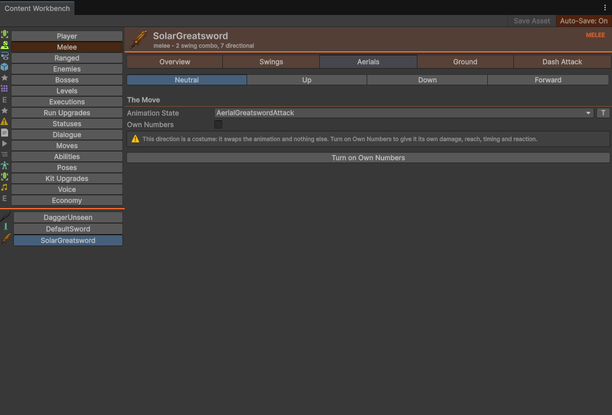
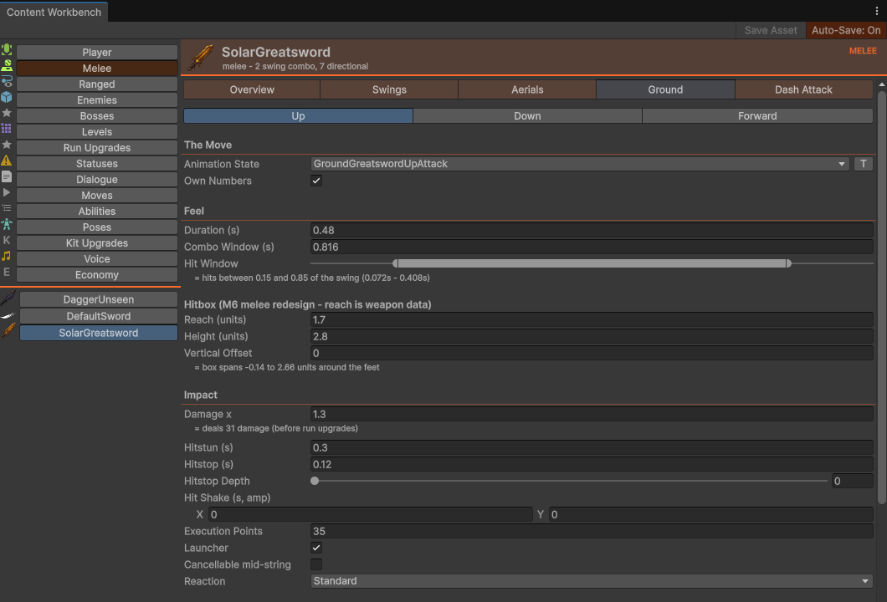

01Opening it
Two doors, same room.
- Gleamwood ▸ Content Workbench opens the window (minimum size 780×500). A fresh window lands on the Melee tab.
- Or right-click any tunable asset in the Project window and pick Assets ▸ Open in Content Workbench — the window opens and selects that asset on the correct rail tab.
The right-click item only lights up for types the workbench understands: WeaponDefinition (melee or ranged), EnemyDefinition, CombatStatusDefinition, PlayerContext, BiomeDefinition, MusicSet, or any ScriptableObject whose class carries [WorkbenchCategory]. Routing is what you'd expect — melee weapons land on Melee, an EnemyDefinition lands on Bosses if it's boss-staged (§2) and Enemies otherwise, biomes and the MusicSet land on Levels. Anything the router can't place falls back to the first tab, Player: CategoryIndexFor returns index 0 when no category Owns the asset, and index 0 is whichever category sorts first — PlayerCategory, at Order => 0 with no tie.

[ok] registration checks sitting above any stat: SolarGreatsword is in the WeaponCatalog and a loot table, so it can actually appear in a run.02The rail — how categories are decided
Sixteen tabs ship on the rail today, and eight of them are built in as classes — the other eight are ScriptableObjects that carry [WorkbenchCategory] and got a tab for free.
The left rail is 216px of icon+label category buttons and an asset list. The right pane is a 44px accent banner (icon, title, subtitle, upper-cased category chip) over a scrollable form. The table below is in rail order — Order ascending, ties broken by title, which is why the three Order-6 tabs land next to each other, Executions first of them.
| Tab | Order | Built by | What it lists | Where it looks |
|---|---|---|---|---|
| Player | 0 | class | Two entries: “Balen (Player)” (feel) and “Balen (State Machine)” (its FSM, on the shared States surface). Also the fallback tab — anything the right-click router cannot place lands here, because it is index 0 | Hard paths Assets/_Game/Player/Resources/PlayerSettings.asset and Assets/_Game/Player/Data/PlayerDef.asset |
| Melee | 1 | class | Every MeleeWeaponDefinition, name-sorted | Assets/_Game |
| Ranged | 2 | class | Every RangedWeaponDefinition | Assets/_Game |
| Enemies | 3 | class | EnemyDefinitions the Bosses tab does not claim — not boss-staged, or boss-staged and still fielded by a spawn table (§07) | Assets/_Game |
| Bosses | 4 | class | EnemyDefinitions that are boss-staged and not fielded by any spawn table | Assets/_Game |
| Levels | 5 | class | The MusicSet first, then every BiomeDefinition | MusicSet at hard path Assets/_Game/Audio/Resources/MusicSet.asset; biomes in Assets/_Game |
| Executions | 6 | class (the one built-in outside WorkbenchCategories.cs — it is in WorkbenchExecutionBeats.cs, beside the beat drawer it shares) | Every ExecutionPayoffConfig — one page per finisher payoff (ten ship), carrying the beat list and the timeline those beats resolve to. Authored through Executions §06 | Assets/_Game |
| Run Upgrades | 6 | attribute | Every RunModifierDefinition — the per-run rule changes. Can create | All of Assets; new assets go to Assets/_Game/Systems/Run/Resources/RunModifiers |
| Statuses | 6 | attribute | Every CombatStatusDefinition — the reference zero-code tab (see below) | All of Assets |
| Dialogue | 7 | class | Every DialogueSet, grouped by beat (Intro / Victory / Defeat…) — see Dialogue | Assets/_Game — a rich IWorkbenchCategory (three-level nesting the raw inspector makes miserable) |
| Moves | 7 | attribute | Every MoveDefinition — the directional moveset entries the player buys. Can create | All of Assets; new assets go to …/Run/Resources/Moves |
| Abilities | 8 | attribute | Every AbilityDefinition — what gates room reachability. Can create | All of Assets; new assets go to …/Run/Resources/Abilities |
| Poses | 8 | attribute | The PoseCatalog — pose id → Sprite, so a .dlg line can name a portrait it cannot hold a reference to | All of Assets |
| Kit Upgrades | 9 | attribute | Every MetaUpgradeDefinition — the Gleam-bought permanent upgrades. Can create | All of Assets; new assets go to …/Run/Resources/KitUpgrades |
| Voice | 9 | attribute | Every VoiceBank — dialogue audio by key, under a Locale tag naming the language. That tag is editor-only: DialogueSync.FindVoiceBank compares it, every caller asks for en, and a bank matching nothing still wins by the first-found fallback — so a second language is authored and inspected today, never played (dialogue.html §09) | All of Assets |
| Economy | 90 | attribute | The single EconomyDefinition — what a run earns (currency name, per-kill, per-depth, clear / slip / boss bonuses). The prices were always a campaign's to set; this is the income half, retunable from a campaign's [Economy] INI block. No NewAssetFolder, so no New button — there is one asset and the defaults are the shipped economy | All of Assets |
| your designer tab | 100 | attribute | All assets of every type sharing a [WorkbenchCategory] name | All of Assets. Untagged Order defaults to 100, so a new tab lands after everything shipped |
Assets, not Assets/_Game. The Assets/_Game default belongs to WorkbenchCategory.Find, which only the hand-written built-ins call. An attribute-built tab uses AssetDatabase.FindAssets("t:" + type, new[]{ "Assets" }) — so a tagged type finds its assets wherever a mod, a package or a scratch folder put them.BossDefinition's bossPrefab points at the prefab that references it AND no EnemySpawnTable still fields that prefab — the workbench finds the enemy's prefab (the one under Assets/_Game/Enemies/Prefabs whose EnemyStateMachine.DefinitionAsset is this def), looks for a BossDefinition staging that prefab, then asks whether a spawn table fields it; a creature a table fields is a mob that also holds an arena, and lists under Enemies (§07). Two consequences: an enemy with no prefab can never be classed as a boss, and the answer is cached — but since 2026-08-31 that cache clears on the next asset import, so SAVE the BossDefinition and the rail re-sorts itself. This one had a second edge worth knowing: boss classification resolves THROUGH the prefab lookup, so a definition first opened before its prefab existed cached "not a boss" for the window's whole life — which is why Boss Staging could simply never appear for it.Discovery — the window has no hard-coded tab list
The window is a shell: WorkbenchCategoryRegistry.Discover() finds every IWorkbenchCategory implementation (seven of the eight rich built-ins live in WorkbenchCategories.cs and the eighth, Executions, in WorkbenchExecutionBeats.cs; the other eight tabs need no class at all) and every [WorkbenchCategory]-tagged ScriptableObject, sorts them by (Order, Title), and drives the rail, banner and form entirely through that interface. Tag any SO class and it gets a rail tab, an asset list, and a working form — no workbench edit. Types sharing a category name share one tab (the first type's accent wins, and the first type that names a NewAssetFolder claims the tab's New button). The attribute is a zero-cost marker at runtime.
// Assets/_Game/Systems/Authoring/WorkbenchAttributes.cs — declare, don't wire:
[WorkbenchCategory("Hazards", Accent = "#4dd2ff", Order = 20,
NewAssetFolder = "Assets/_Game/Hazards/Resources")] // omit to disable New
public class HazardDefinition : ScriptableObject { ... }The generic form draws in one of two modes. If any field on the type carries [WorkbenchField], the form is curated: only attributed fields draw (dead fields stay hidden), in declaration order, with a section header emitted each time the section name changes — so keep same-section fields contiguous. If no field is attributed, every serialized field draws under one “Fields” section, with a tip suggesting you curate.
[WorkbenchField("Feel", Tooltip = "Seconds between pulses", Note = "0 = single burst")]
public float PulseInterval = 0.5f; // Note renders as an effective-value hint under the fieldIn both modes AudioClip fields render as SoundRows with a Play button, and custom drawers (AnimatorStateRef, EnemyStateNameRef) apply automatically because rows are plain PropertyFields. CombatStatusDefinition ships this exact pattern today — the Statuses tab is drawn entirely from its attributes. Full worked example on Extending.
The code-driven path — IWorkbenchCategory
The attribute path draws the generic form and stops there. When a tab needs more — sub-tabs, registration checks, effective-value math, cross-asset editing (like boss staging pulling from a BossDefinition), or a hand-picked asset list — implement IWorkbenchCategory instead, and compose the page from the same WorkbenchForm primitives every built-in tab uses. The window discovers it identically: no registration, no workbench edit. The seven built-ins in Assets/_Game/Editor/Workbench/WorkbenchCategories.cs are the reference implementations — the Melee, Enemy, Boss and Dialogue tabs you've seen are exactly this.
Subclass WorkbenchCategory for sensible defaults and override only what you need. A rich tab is about twenty lines:
// Discovered automatically by WorkbenchCategoryRegistry.Discover() — no window edit, ever.
public sealed class TrapCategory : WorkbenchCategory
{
public override string Title => "Traps";
public override Color Accent => new(0.9f, 0.5f, 0.2f);
public override int Order => 20; // rail slot; built-ins hold 0-5
public override IEnumerable<Object> GetAssets() => Find("t:TrapDefinition"); // base helper
public override bool Owns(Object a) => a is TrapDefinition; // routes right-click Open
public override string Subtitle(Object a) => "hazard"; // banner line
public override void DrawForm(WorkbenchForm form, Object asset)
{
var so = form.SO(asset);
switch (form.SubTabs("Overview", "Damage")) // accent-tinted sub-tabs
{
case 0:
form.Registration("t:TrapTable", AssetDatabase.GetAssetPath(asset),
"in a trap table", "orphan - never placed");
form.Section("Identity");
form.Prop(so, "displayName", "Name");
break;
case 1:
form.Section("Damage");
form.Prop(so, "damage", "Damage");
form.Effective("applied once per trigger");
form.SoundRow(so.FindProperty("hitSound"), "Hit Sound");
break;
}
}
}| Member | Controls |
|---|---|
Title · Accent · Order · IconSpec | The rail button: its label, colour, position (lower = higher; built-ins hold 0–9, attribute tabs default 100) and icon. IconSpec is either "icon:<builtin name>" for a Unity editor icon or a literal glyph; empty falls back to the tab's initial, so the icon column always aligns. Resolution and caching live in WorkbenchTabIcons — failures are cached too, because IconContent logs a console error for an unknown name and asking twice would complain twice per repaint. |
GetAssets() | The asset list under the tab, already ordered. Find("t:Type") is the base helper; the Levels tab returns the MusicSet first, then biomes — you control it. |
Owns(asset) | Cheap membership test that routes Assets ▸ Open in Content Workbench to the right tab. Usually a one-line type check. |
DisplayName · Subtitle · Icon | Rail label, banner subtitle, thumbnail. Defaults: asset name, empty, mini-thumbnail — override for flair (Player shows “Balen (Player)” and the prefab preview). |
DrawForm(form, asset) | The page. Everything you draw goes through form; the window handles Update/Apply on the selected asset and Auto-Save for you. |
CreatableType · NewAssetFolder | The New verb, opt-in. Both must be non-null or the create row does not render at all — that is the default, deliberately, since most tabs list assets whose creation has other rules (a weapon wants catalog registration, an enemy wants a prefab). An attribute-tagged type declares the folder on the attribute; a hand-written category overrides both. Full mechanics under The New verb below. |
The WorkbenchForm primitives, all public (Assets/_Game/Editor/Workbench/WorkbenchForm.cs): Section, SubTabs, Prop/Rel/Field, Effective/Note, Check/Registration, SoundRow/VolumeIf, AnimState, SelectButton, HelpBox, and SO/Apply for cross-asset edits (each secondary asset you touch wants its own SO(x).Update() … Apply(x)).
The New verb — creating an asset without leaving the window
Four tabs can make content, not just list and edit it: Run Upgrades, Moves, Abilities and Kit Upgrades. A name field and a New button render at the foot of the rail — deliberately below the asset list rather than in the header, because creating is the rare action on a tab whose normal use is picking something that already exists, and a New button above the list is the one people hit by accident. The row appears only when the category declares both CreatableType and NewAssetFolder; every other tab shows nothing at all.
The reason most tabs should not have it is the reason this one exists. "Designers author per-run upgrades in the Workbench" used to mean "designers author them in the Project window and then remember to register them" — so WorkbenchAssetFactory.Create is a shared primitive rather than a button per tab, and it does the whole job:
- Sanitises the typed name to the project's lower-case-with-hyphens id convention, and takes a uniquified path — pressing New twice makes two assets rather than an error or an overwrite.
- Seeds
idanddisplayNamefrom the name, when the type has those fields and they're empty. Most content types carry anidthat is a save key, and one defaulted to the empty string is a trap the validator would only catch later — seeding it is what makes New useful instead of the start of a checklist. - Creates, registers an Undo, saves and re-imports.
- Runs every discovered
IWorkbenchAssetCreatedHandlerthat claims the type, then selects the asset and logs where it went.
RunModifierDefinition is not usable until the ordered catalog lists it — the runtime loads that catalog, not the folder, because Resources.LoadAll returns files in an order nobody controls and the offer roll walks the catalog to build its pool. So RunModifierCreatedHandler regenerates it on create. The factory was never taught about run modifiers: the side that knows declares a handler and the factory discovers it — the same declare-don't-wire mechanism as the category attribute itself.[WorkbenchCategory] + [WorkbenchField] (zero code, the Statuses tab). Needs sub-tabs, checks, derived values or cross-asset forms → IWorkbenchCategory. Both are discovered the same way and can coexist on the same rail.03The form language — read one tab, read them all
Every form is built from the same six row types. Learn them once.
| Row | What it looks like | What it means |
|---|---|---|
| Section header | Bold label + thin accent-tinted rule | A field group (“Feel”, “Impact”, “Presentation”…). Sub-tab structure below mirrors these headers exactly. |
| Effective label | Small indented line starting = | The resolved number after multipliers and derivations — = deals 24 damage (before run upgrades), gravity 40.0 | takeoff velocity 15.0 u/s. You never do the math in your head. |
| Registration check | Green [ok] … or red [!!] … at the top of Overview tabs | Whether this asset is actually wired into the game (catalog, loot table, spawn table, run plan, boss staging). A red row means the asset exists but the run will never show it. |
| INI sync row | in sync with GameContent.ini / DIVERGED on biome forms, boss staging and enemy vitals | Whether the fields the INI co-owns still match it. DIVERGED means Import Content INI would overwrite your edits — the row names the first difference and offers Import / Reveal, mirroring the Dialogue tab's .dlg row. Hidden for assets with no INI section. |
| SoundRow | Clip field + Play button (disabled when empty) | Auditions the clip right in the editor (via Unity's internal preview API). The row itself has no volume — where a volume exists it's a separate indented “Volume” row that appears only once a clip is set. |
| Animation State row | Dropdown of the rig's real clip names + [T] button | The validated AnimatorStateRef dropdown — full mechanics in §11. |
LootTable under Assets directly depends on this asset. Results are cached, and since 2026-08-31 the cache clears on the next asset import — which is to say when you SAVE. A drag in the Inspector is dirty in memory and imports nothing, so the row goes green on the save rather than on the drop, and the workbench repaints itself even though it is not the focused window. You no longer need to close and reopen the workbench to turn the row green. Built-in tab listings scope to Assets/_Game; checks and dynamic tabs scan all of Assets.04Saving — the Save Asset / Auto-Save model
The workbench mirrors the Input Actions editor: edits hit the in-memory asset immediately, disk writes are explicit — unless you opt into Auto-Save.
- Manual mode (default). Editing marks the asset dirty: a red unsaved changes label appears in the toolbar and the window title becomes Content Workbench*. Click Save Asset to flush every dirty asset to disk. Clicking it clean is a harmless no-op — it's only disabled while Auto-Save is on.
- Auto-Save. The toolbar toggle (tinted with the tab's accent when on) writes to disk after every change. Turning it on immediately saves everything outstanding. The preference persists per machine in EditorPrefs under
Gleamwood.Workbench.AutoSave(default off). - Undo works. Every edit goes through a SerializedObject, so Ctrl+Z behaves exactly as in the raw inspector — including on the shared assets.
- Sub-assets ride along. Saving flushes each dirty object through its main asset, so enemy state configs and the bow-aim config (which live as sub-assets) save with their parents.
- No float-noise dirtying. Min/max sliders snap to 0.01, so a drag wiggle never dirties an asset you didn't mean to touch.
05Melee — Overview | Swings | Aerials | Ground | Dash Attack
The flagship category (and the default tab). Damage always resolves as BaseDamage × swing multiplier × run upgrades — the workbench shows the first product for you.
Overview
| Group | Field | What it does |
|---|---|---|
| Checks | WeaponCatalog | [ok] registered in WeaponCatalog — or red “NOT in WeaponCatalog - run resume can't restore it”. |
| Loot table | [ok] offered by a loot table — or red “not in any loot table - pedestals will never offer it”. | |
| Identity | Display Name | Shown on the HUD, pedestals and the forge. Empty = asset name. |
| Icon | HUD + pedestal sprite. | |
| Description | Player-facing blurb shown in the detail pane beside the shopkeeper's Weapon Unlocks list when a row is highlighted (it was under the name on the row itself until 2026-09-01) — so it only ever renders on a weapon with lockedUntilUnlocked. Pedestals and the HUD ignore it. (Hidden here until 2026-07-27; it used to be a dead field.) | |
| Base Combat | Base Damage | The multiplicand for every swing. |
| Base Hitstun (s) | Fallback when a swing's own hitstun is 0. | |
| Base Hitstop (s) | Fallback when a swing's own hitstop is 0. | |
| Armor Piercing | Hits ignore enemy super armor. | |
| Statuses On Hit | Applied by every swing and the dash attack (e.g. Ignite on the SolarGreatsword). | |
| Combo Flow | Recovery (s) | Lockout after the combo ends. |
| Input Buffer (s) | How early the next press can queue. |
Swings
A “Swing 1…N” toolbar sits over the combo array. + Add Swing grows the combo and jumps to the new swing; − Remove Last shrinks it (disabled at one swing). Per swing:
| Group | Field | What it does |
|---|---|---|
| Feel | Duration (s) | Total swing time; the animation clip is speed-synced to fit it. |
| Combo Window (s) | Absolute time from the swing's start — the same timer Duration runs on, not extra time after it. The step drops into recovery at Combo Window, and the follow-up fires only while Duration × 0.7 ≤ elapsed ≤ Combo Window. So author it larger than Duration on anything that must continue; smaller closes the window before the swing finishes — an empty interval, so that swing can never chain and it ends mid-animation. | |
| Recovery Override (s) | MeleeAttackConfig.RecoveryTime: 0 inherits the weapon's Recovery value from Overview. A positive value supplies this swing's recovery lockout. It is available on combo swings and directional configurations, and is resolved once when the swing starts; changing the weapon later does not retime a recovery already committed to. | |
| Hit Window (min–max slider) | Fraction of the swing (0–1) during which the hitbox is live. Effective label spells it out: hits between 0.30 and 0.70 of the swing (0.12s – 0.28s). An end at ≤0.01 displays as 0.9. | |
| Reach / Height (units) | Hitbox size. 0 = defaults (1.2 reach, 1.4 height). Drag the box handles visually: select the Player in a scene with this weapon on its PlayerCombatRangePreview. | |
| Vertical Offset | Shifts the box up (+) or down (−). The box seats above the feet, so at 0 it barely reaches below them — a down-air is unusable without a negative value. The effective label prints the real span: = box spans −1.58 to 0.53 units around the feet. | |
| Impact | Damage × | Multiplier on Base Damage — effective label shows the result, = deals 24 damage (before run upgrades). |
| Hitstun (s) / Hitstop (s) | 0 = fall back to the weapon's base values. | |
| Hitstop Depth | How far the world slows during the freeze; 0 = the shared default of 0.05. Lower is heavier. Duration alone cannot tell a tap from a heavy blow — it only holds the same freeze for longer, which reads as a pause rather than as weight. | |
| Hit Shake (s, amp) | Screen shake this swing earns on a hit: x = duration, y = amplitude. Zero on either axis = none, which is every shipped swing today. Shake means “something big happened” only while it stays rare — author it on the two or three swings that deserve it. The player's Screen Shake accessibility setting scales it (Full / Reduced / Off, applied at ShakeComponent — the one chokepoint every shake in the game funnels through). This row and the tooltip it mirrors both said "Reduce Motion" until 2026-08-27; no such setting exists. A Reduce Motion key is planned for the execution cut-scenes and would make the old wording true — but a tooltip promising a setting the player cannot find is a promise the game does not keep, which is the exact failure GameSettings' own header records. | |
| Execution Points | Points this hit grants toward an execution. The bar is the enemy's own Execution Threshold (§7), 100 by default — the weapon authors one half of that economy and the enemy the other. | |
| Launcher | Launches a grounded enemy on contact, without needing the juggle meter. This is the ONLY way an enemy goes airborne. Ignored on a target already airborne, or one whose definition says it cannot be launched. Exactly one move per weapon should carry it — the ground up-attack; a run's Updraft modifier imbues a second one temporarily, whereas authoring it here is permanent. | |
| Cancellable mid-string | Which swings cancel into a directional attack is the weapon's statement, and ticking it anywhere changes the answer everywhere. Tick nothing and the final swing cancels as a legacy fallback, for definitions written before the field existed. Tick it on any swing and the weapon is taken at its word: only ticked swings cancel — so tick the last one too, unless you want it to dead-end into recovery with nothing on screen explaining why. All three shipped weapons tick their last swing for exactly that reason. On an aerial variant it is mandatory rather than optional: an unticked aerial cannot be cancelled at all, and that is the loop guard — an aerial that could always cancel into another aerial is a player who never falls. It costs the same per-string cancel budget either way — it changes which swing may cancel, never how many times a string can. | |
| Reaction | What the hit does beyond its numbers. Standard = hitstun. Spike = drive an airborne target into the floor; the effective label prints the resulting speed, which comes from |Knockback Y| with a floor of 18. Crumple = no knockback, double hitstun. Push = horizontal recoil away from the attacker, decaying to a stop during ordinary hitstun. Existing armor, juggle, launch and execution decisions retain priority. | |
| Push Speed | Shown when Reaction is Push, on both the melee form and Dash Attack. Edits |KnockbackForce.x| in units/s, clamped to 0–20; Y is preserved. An effective label reports the maximum travel and duration. Push lasts at most 0.5 s and solid collision can shorten it. Spike Y and the remaining vector components still require the raw Inspector. | |
| Motion | Step Distance | Positive values opt into a smooth forward step in world units, capped at 2. The player plants before and after the step, including recovery; collision can shorten travel. Zero keeps the shared lunge behavior. |
| Step Start | Shown for a positive Step Distance. Fraction of Duration when forward travel begins. | |
| Step Plant | Shown for a positive Step Distance. Fraction of Duration when travel ends; must be later than Step Start. Blocked travel is consumed, so removing an obstacle later does not release a stored step. | |
| Lunge Force | Legacy forward burst when Step Distance is zero. Writes MovementForce.x, preserving Y. This is not units/s: the shared melee state's Lunge Force Multiplier produces the speed shown beneath it. The effective lunge readout is hidden when the authored step owns movement. | |
| Lock Movement | Freeze the player after the legacy lunge portion. A positive Step Distance controls its own planted anticipation and recovery independently. | |
| Presentation | Swing Sound | SoundRow — audition with Play. |
| Hit Effect | Spawned on connect (e.g. FX_HitSpark). | |
| Animation State | Validated animator dropdown. Empty = default PlayerMeleeAttack1 (first swing) / PlayerMeleeAttack2. |
Aerials · Ground
Two tabs over the same idea: the move the player gets when they hold a direction while swinging. A direction toolbar sits where the swing toolbar does — Neutral · Up · Down · Forward in the air, Up · Down · Forward on the ground. Ground has no Neutral because the neutral ground swing is already the combo step; a Neutral entry there would replace the string with a single move.
Pick a direction the weapon has no move for and the tab says so and offers + Add <Direction> move, which appends an entry ready for a clip. Two rows sit above the shared swing form:
| Row | What it does |
|---|---|
| Animation State | The full-body clip this direction plays, from the same validated dropdown the swings use. Leave it empty and the entry is skipped entirely — the direction falls back as if it were never authored, which the tab warns about rather than letting you wonder. |
Own Numbers (OverrideConfig) | Off, the direction borrows the combo step's damage, reach and timing, so it only changes the drawing — the tab calls that a costume and offers a one-click Turn on Own Numbers. On, the whole swing form appears and the direction becomes a genuinely different move. |
The form below those rows is the same one the Swings tab draws, deliberately: a direction's config is a swing config, and authoring them through two different forms is how the two drift into disagreeing about what a field means. The footer reminds you of the rule that differs per tab — aerials equal to Duration (one attack per airtime), ground larger. It states the ground half unconditionally, and the shipped asset no longer agrees. Two of DefaultSword's three ground moves author Combo Window EQUAL to Duration (Down 0.4/0.4, Forward 0.45/0.45; only Up keeps the larger 0.5625/0.6667) and own their lockout through the Recovery Override row above. A ground direction that branches the string wants the larger window; a ground special that should drop straight into recovery does not. The footer does not yet say so (WorkbenchCategories.cs:727).
Because it is the same form, its Reach field says "drag visually: select the Player in a scene" here too — and that is now true: the scene tuner draws and drags a box for every direction with Own Numbers on, plus a bottom-edge handle for the Vertical Offset a down-air needs. See Combat §06. A costume direction gets no box, because the swing it takes scans the combo step's.
Dash Attack
Same Impact and Presentation vocabulary — including Hitstop Depth and Hit Shake, which the dash attack authors independently of the swings — plus a Strike Box group: Reach and Height (0 = the same 1.2 × 1.4 defaults; the box travels with the player during the dash — drag it visually on the Player, it's the violet box). It has no Launcher, Cancellable or Reaction row: the dash is one strike, not a string. One subtlety worth knowing: a custom dash animation state is full-body on layer 0; leave it empty and the game uses the layer-1 upper-body slash overlay (Upper_Slash1).

GreatswordAttack1 animator dropdown with the [T] raw toggle at its right edge.


06Ranged — Overview | Shot & Timing | Presentation
The bow's arrow is the shot — it carries the damage, and its Speed, Durability, Range and Lane Radius are authored numbers on the The Arrow group. Everything else on the tab is the timing minigame that gates it.
Same Overview checks and Identity/Base Combat groups as melee, then:
| Sub-tab | Group | Fields |
|---|---|---|
| Shot & Timing | Draw | Draw Time (s) — releasing earlier cancels the shot. |
| Perfect Release | Perfect Window (s) min-max slider (0–3, seconds after draw start) with effective perfect between …s and …s of the draw, a reachability check (below), and Perfect Damage ×. | |
| On Hit | Execution Points — points this shot grants toward an execution; the bar is the enemy's own Execution Threshold (§7), 100 by default. | |
| The Arrow | Projectile — the arrow that carries this shot's damage; leave it empty and the bow still fires, but it fires something invisible, which is a bug rather than a style. Speed (u/s) (0 = the prefab's own speed — this is the range trade-off, since travel time is what a distant target gets to react in). Durability — how many enemies one arrow may strike before it is spent; 0 = the bow-aim state's SingleTargetHit (what every shipped bow uses), 1 is the same thing stated outright, higher pierces. Range (0 = the state config's ProjectileMaxDistance) and Lane Radius (0 = its ProjectileRadius) — how fat the arrow's sweep is, the difference between a near miss and a hit. | |
| Presentation | Sound | SoundRows for Release Sound and Perfect Release Sound. |
| Visuals | Hit Effect — spawned at the arrow's impact point. | |
| Animation | Three validated dropdowns: Draw (layer 0, default StandBowDraw), Hold (layer 1, Upper_RunBowCharge), Release (layer 1, Upper_RunBowShoot). The last two apply while moving only — planted, the hardcoded StandBow* clips play on layer 0. Leave them empty unless you have art drawn to match: both defaults are the torso half of a run-and-aim drawing, and a clip from anywhere else splits the character at the waist (see combat §04). |
[ok] reachable — opens at/after the draw (…s), closes at/before the auto-release (…s) or [!!] this window is not fully reachable: followed by a warning per fault. There are two ways to author a window that never pays, and neither is visible in the raw numbers. Below Draw Time is a dead zone: the draw gate in PlayerBowAimState.FireBow is tested before the perfect judgement, so a release in that slice cancels the shot — it does not score, and no arrow leaves the bow. Past Max Charge is unreachable: the draw auto-releases at MaxChargeTime, so the window effectively closes there whatever the asset says. Max Charge is not a weapon field — it is how long the archer may hold, so it lives on the bow-aim state (Player ▸ Bow ▸ Max Charge, 1.50 s as authored) and every bow shares it; the form reaches across for it and prints its value under the check. Note the slider's own ceiling is 3 s, twice that, so an unreachable tail is one drag away. The check judges the authored window only — Steady Hands widens the live one about its centre at run time, which is a run modifier's doing and not something to fix on the asset. The same invariant is swept over every shipped bow by PlayerBowChargeTests; this just says it before the suite does.DrawSound, PerfectForceMultiplier and BaseKnockback. The Overview footer names Knockback outright; don't burn time authoring them. Knockback has no row at all, and that is the reason there is no Perfect Force × row either: the value does reach the shot — PlayerBowAimState builds a knockback vector from it — and then goes nowhere, because knockback only moves a target through a reaction, and neither PlayerBowAimState nor ArrowProjectile ever sets one. A shot is always Standard, so the magnitude and the multiplier that scales it change nothing at any value. It used to be offered here and nowhere on the melee form, which made the ranged tab both the odd one out and dishonest — selling a number while withholding the multiplier that scales it. ProjectilePrefab used to sit in this list and no longer does: the bow was a hitscan with a decorative tracer, and when the projectile became the thing that carries the damage, every number deciding where it goes and what it can hit moved onto the surface a designer actually uses.07Enemies & Bosses — Overview | States | Behavior | Attacks | Reactions | Presentation
One form serves both tabs — a boss is just an enemy whose Overview grows a Boss Staging section. Everything keys off the definition's state list: each FSM state gets its own section, named “stateId (StateType)”.
WorkbenchModel.IsBoss read “some BossDefinition.bossPrefab points at this def’s prefab”, and from 2026-08-15 the six Boss_Stopgap_* assets pointed at six mob prefabs (ImpScout, VaultAcolyte, EmberWisp, PyreArcher, CinderHound, and VaultAcolyte again for Gale) — so every shipped EnemyDefinition satisfied it. The Enemies tab listed nothing, Bosses listed all ten, and the spawn-table check was skipped for the creatures the spawn tables field every level. Nothing was broken at runtime and nothing said a word, which is the whole reason it is worth writing down. The rule is now staged and not fielded by any spawn table, the two tabs are asserted to be a partition of the shipped definitions, and a promoted mob shows BOTH lines: staged by Boss_Stopgap_Hollow (and still fielded by a spawn table - a promoted mob) above its live registration check.States — building the machine itself
The other sub-tabs tune states that already exist. States is where the machine is built: create, rename, delete, set the initial state, and wire transitions. It is the only correct way to add a state — see the box below for why that matters.

idle (initial) marked, then the selected state's fields and its two wired transitions.| Action | What it actually does |
|---|---|
| + Create State | Pick a concrete config type and a name. Creates the config as a sub-asset of this definition, names it, sets StateName, appends it to States, promotes it to InitialState if it is the first, and runs the IStateMachineAssetPostProcessor hooks. All four steps, atomically. |
| x (per row) | Deletes the state. If it is a sub-asset of this definition you get a confirm, then DestroyImmediate + reimport, and InitialState is cleared if it pointed there. A config living elsewhere is only unreferenced, never destroyed. |
| Set as Initial State | What the machine enters on spawn. Disabled when it already is. |
| Rename asset to State Name | Keeps the sub-asset's name in step with its StateName so the Project window matches the runtime id. |
| Animation Clip · Animator State · Animator Layer | The presentation trio every state config carries, drawn under the selected state. The clip drives both the animator state and the clip-length timings other sub-tabs work in fractions of; Animator State empty = the clip name. |
| Transitions | Add/remove per state, each with a To State and its Conditions (sub-assets) plus Dynamic conditions. An empty condition list means fires unconditionally the moment it is checked — the form says so inline. |
| Maintenance ▸ Cleanup Orphaned & Broken Sub-Assets | The recovery path. States and their conditions live as sub-assets inside the definition's .asset file, so a deleted script or a removed reference can leave debris behind that nothing lists. The button sweeps them and reports how many broken (missing-script) and orphaned sub-assets it removed. |
StateName, but transitions resolve by StateId (StateName, else the asset name). So a blank StateName registers a state under "" that no transition can ever reach, and a duplicate one makes RegisterState throw. Neither is visible until an enemy breaks mid-run. The States tab shows both as red rows before you leave the window — along with empty slots, a missing initial state, transitions with no target (which the runtime skips in silence), and two edges from one state to the same target. That last one is this project's most expensive FSM authoring mistake: StateMachine.AddTransition does list.RemoveAll(t => t.TargetState == toState), so the later edge deletes the earlier one and its condition dies with it, and the game plays on with an edge the asset says exists. The row reads “N duplicate edge(s): … - the LATER one deletes the earlier, condition and all. Combine them into one edge with an OR condition.” The mod path has always refused this by name; an inspector drag did it in one click with nothing said, which was the wrong way round — the surface a designer uses every day was the permissive one.WorkbenchStates is generic over the definition type, so any future state machine gets it free.Overview
Checks first: [ok] prefab: CinderHound (red if no prefab references this definition), then [ok] in a spawn table — red means “not in any spawn table - it will never spawn in a run”. A bespoke boss swaps that second check for [ok] staged by Boss_Krag, because bosses do not use spawn tables — staging comes from the BossDefinition (§2). A promoted mob gets BOTH lines, and that is the point: the Boss_Stopgap_* assets stage creatures their biome’s table still fields, so they are mobs that also hold an arena. They list under Enemies, not Bosses. Until 2026-08-17 staging alone decided the tab, which filed all ten definitions as bosses — the Enemies tab listed nothing and the spawn-table check was switched off for exactly the six definitions that depend on a table. Then Vitals: Max Health (0 = can't die from plain damage, executions only), Execution Threshold — the execution points this enemy takes before it can be executed, minimum 1 and 100 by default; this is the per-enemy half of the execution economy, and the weapon authors the other half (points per hit, §5/§6) — then Execution Decay Delay (s) (seconds without an execution hit before the meter starts draining; 0 = never drains, 3 by default) and Execution Decay Rate (/s) (points per second it then drains; 0 = never drains, 25 by default — no shipped definition overrides either yet), which are the other half of that economy again: together they decide whether a combo string can bank enough points to matter. Both lived on the prefab only until 2026-08-13, so the workbench could tune the thing that fills the meter and not the thing that empties it. Last comes Can Be Juggled. If a prefab exists you also get the reminder that hit flash and colliders live prefab-side, plus a Select Prefab (colliders, range gizmos) button that jumps straight to it.


The Boss Staging group edits the BossDefinition asset in place: Entrance Delay (s) (pause before the boss activates), Boss Music SoundRow (crossfades in when the fight starts; empty = level music continues — see Audio for the intro-hush beat), the Dialogue Set reference plus an Edit exchange → button that jumps to the Dialogue tab (every beat the boss speaks — Intro, Victory… — lives in that one grouped set now, not a separate outro field), Adds Table (arena reinforcements), and Reward (spawned on victory).
Behavior
| State type | Fields |
|---|---|
| Chase | Speed × — base chase speed is 3 u/s; effective label shows chases at N u/s. |
| Float Chase | Speed ×, Hover Height, Bob Amount, Bob Speed. |
| Idle | Header + animation validation only — no editable fields here (raw inspector, §12). |
| Trigger Ranges | Every distance-based transition gets a row labeled fromState → toState with its trigger Distance. Drag these visually — select the prefab in a scene and pull the circles and bands. |
Attacks
| State type | Fields |
|---|---|
| Attack Phase | Plant (stop moving), Lunge Speed (u/s) (0 = stationary phase), Deals Damage — when on, adds Strike Range (horizontal reach, drag it on the selected prefab) and Damage — then Super Armor Hits (hits absorbed before hitstun; 0 = always interruptible), Phase Ends At (fraction of the clip — lower = snappier chain), Next Phase (validated state-id dropdown, §11). |
| Projectile Attack | Shot Speed, Arc Lift (upward launch for the lob), Damage, Muzzle Offset (drag visually), Fires At (fraction of the clip), Shot Cadence (s). |
| Summon | Summon Count, Max Alive, Spawn Radius, Cadence (s). |
| Relocate / Hazard Phase | Header + animation validation only — tune their numbers in the raw inspector (§12). |

attackCharge → attackLunge → attackStrike — each phase ends at a clip fraction and hands off through a Next Phase dropdown of real state ids, with [T] available when you need to type free-hand.Reactions
Juggled: Launch Force, Air Drag. Death: Death Effect. Hit renders its header and animation validation only — its fallback-state field lives in the raw inspector.
Presentation
The Hurt group is special: it edits the prefab's EnemyStateMachine component in place — Hurt Sound SoundRow plus an indented Volume row that appears once a clip is set (plays on every landed hit, next to the hit flash). Then State Sounds: one SoundRow per FSM state (the telegraph is the charge phase's sound; the death sting is the dead state's), each with its conditional Volume row. Finally, if the enemy has a death state, a Death group with the Death Effect.
EnemyAnimationWhitelist.HoldsPreviousAnimation(state), the same predicate ConfigurableState is governed by — draws a grey “no clip — holds the previous animation”, and an Idle state draws nothing at all. Red “clip 'X' has no matching state in <controller>” if the enemy's AnimatorController layer 0 lacks a state matching the clip name. A wrong name is a silent no-op in game — this is where you catch it. Why the grey row is grey: the panel used to test clip == null && state is not EnemyIdleConfig for itself and drew a red “no animation clip wired” on twenty-five shipped states — every Juggled state and every Hit state but the Demon King's — all of which are doing the deliberate thing, because a hit is read from the tint and the knockback rather than from a new pose. It was blind to AnimatorStateName too. A validator that is wrong about the content it ships with teaches, within a day, that red here means nothing; the cost is not the noise but the next row, the true one, being ignored.08Levels — the MusicSet and every biome
Two asset kinds share the tab: the single global MusicSet (listed first) and each BiomeDefinition.
| Asset | Group | Fields |
|---|---|---|
| MusicSet | Global Music Slots | SoundRows for Menu Track (boot + title), Hub Track (empty = Menu Track), Level Track (fallback) — for run scenes whose biome has no music of its own. The MusicDirector crossfades on scene change; empty slots are silent. |
| BiomeDefinition | Check | [ok] referenced by the run plan — red means “not in any RunPlan node - runs never visit it”. |
| Identity | Display Name and Chapter (the biome intro card, e.g. CHAPTER V), Objective (intro card body text). | |
| Music | Level Music SoundRow — effective note: empty = the MusicSet's Level Track fallback; rests keep this track. | |
| Structure | Topology first — it picks the generator, so it picks the rest of the group. Then Min / Max Rooms (all three generators read them) and the dials that topology actually consults: Branching gets Fan Branches, Band Height, Path Rooms Min/Max and Calm Room Before Boss; Chain gets Vertical Jog Chance, Side Branch Chance, Max Branches, Branch Run Max and Calm Room Before Boss; Lattice gets Lattice Tier and Side Branch Chance. Then HP Scale / Stage — enemy health multiplier growth per run depth. The list comes from LevelsCategory.StructureKeys, which BiomeKeyParityTests sweeps against GenRules's real fields. | |
| Content Links | Spawn Table (rolled at every spawn marker) and Boss (empty = stand-in arena mode), each with a Select button when set. |

git checkout -- Documentation/Wiki/images/).GameContent.ini — the tab's own footer says so. See Tuning & INI.09Player — Balen's two assets, six sub-tabs
The Player tab edits Assets/_Game/Player/Resources/PlayerSettings.asset — and, since 2026-08-15, reaches into Assets/_Game/Player/Data/PlayerDef.asset for the nine state-config sub-assets' own feel rows, routed onto the sub-tab of their domain by PlayerCategory.FeelTab: Idle/Run onto Movement, Jump/Fall onto Jump & Air, Dash/WallSlide onto Dash & Wall, BowAim onto Bow, MeleeAttack/DashAttack onto Attacks. A config with no route prints a red row above the strip rather than landing on an arbitrary tab. The strip itself is PlayerCategory.FeelSubTabs, six entries. Reordering or appending is safe — WikiScreenshotTool resolves its shots against this array by name since 2026-08-23 (it asks for "Jump & Air", not index 1) — but renaming an entry breaks the capture, loudly, which is the trade that was chosen after an inserted tab once photographed the wrong page under the right filename.
| Sub-tab | Groups & fields |
|---|---|
| Movement | Run: Move Speed (u/s) (aiming multiplies by the bow's aim multiplier), Acceleration, Turn Snap ×. Run Animation: Min / Max Anim Speed. Then the state feel rows — Idle State: Friction ×; Run State: Run Speed ×, Run Accel ×, Turn Threshold. |
| Jump & Air | Jump: Jump Height (u) and Time To Apex (s) — gravity is derived from these two, and the effective label shows the result: gravity N | takeoff velocity N u/s. Then Min Jump Fraction, Jump Cut ×, Apex Float Threshold. Forgiveness: Coyote Time (s), Jump Buffer (s). Then the state feel rows — Jump State: Apex Timeout ×; Fall State: Fall Gravity ×, Air Braking ×, Air Input Threshold. |
| Dash & Wall | Dash: Dash Distance (u) + Dash Duration (s) with effective dash speed N u/s, Dash Curve (the acceleration shape — the one PlayerContext gameplay field [Tunable] cannot express, so this is its only home), Cooldown, Input Buffer. Dash Jump: Vertical ×, Horizontal ×. Wall Slide: Slide Speed (u/s), Slide Buffer (s), Wall Jump Cooldown (s). Then the state feel rows — Dash State: Momentum Lock At, Direction Threshold; Wall Slide State: Wall Stick Force, Hold-Into-Wall Threshold. A note at the foot points at Attacks for the dash attack, which is a separate state. |
| Bow | Archery: Max Charge (s) (auto-release after this; the HUD ring normalizes to it), Aim Move Speed × (0 = stationary bow). Shot Cast: Fire Origin (drag the green dot on a selected Player in a scene), Shot Radius, Shot Range, Single Target (off = the shot pierces everything in the lane). Per-bow numbers live on the bow asset, not here. |
| Vitals | Max Health, Combo Reset (s). Per-weapon combat numbers live on weapon assets; live movement tuning in play mode is the F1 debug panel — see Tuning & INI. |
| Attacks | The two attack states' own numbers, off their PlayerDef.asset sub-assets — Swing Lunge: Lunge Window (s), Lunge Force ×, Lunge Braking (u/s²); Combo Windows: Input Buffer Opens At, Combo Progress At, Bow Cancel At (fractions of whichever swing duration the weapon supplies); Dash Attack State: Duration (s), Drive Speed (u/s), Deceleration (u/s²), Pass Through Enemies, Run Exit Threshold. Nothing else lives here: the fall's gravity multiplier is on Jump & Air, the dash's momentum lock and the wall-slide state's stick force and threshold are on Dash & Wall, by the routing above, and there is no hurt state config to route. Per-weapon damage, reach, hitboxes and swing durations stay on the weapon assets (Melee tab). All of these per-state rows were authored in the asset and reachable from nowhere until 2026-08-15; a designer hunting one of them searched this window and found nothing. Workbench only, deliberately: a state is created from the SHIPPED sub-asset with no clone, so an F1 slider would write into a tracked .asset during play. |

10Statuses — the smallest form
The whole tab is three fields drawn from attributes on one class — which is exactly why it is the page's reference for the zero-code path.
No sub-tabs, and two groups, because the generic form emits a section header each time the [WorkbenchField] section name changes: Identity — Display Name (shown in enemy/player status tags) — then Behavior — Decay Time (s) (stack lifetime, refreshed on re-apply) and Max Stacks. The form's own note carries the design intent: statuses gate executions (ExecutionDefinition.RequiredStatus) and transitions. Description and Icon exist on the asset but are untagged, so the curated form hides them — they are not shown in game yet.

11The validated dropdowns — AnimatorStateRef & EnemyStateNameRef
Two attributes turn fragile string fields into validated pickers. At runtime both fields stay plain strings — zero cost. The whole reason they exist: a wrong animator state name is a silent no-op in game.
AnimatorStateRef — animator state names
// Assets/_Game/Combat/Code/AnimatorStateRefAttribute.cs
[AnimatorStateRef(0, "default: PlayerMeleeAttack1/2")] // (layer, emptyLabel)
public string CustomPlayerAnimationState;- The popup lists the clip names on the rig's
SpriteClipSet— the list the game actually plays from — alphabetized and de-duplicated, each annotated with the slot it drives (Upper_Slash1 [upper]). The first entry is the empty-label choice — picking it writes an empty string (= use the default). - The declared layer is advisory on a clip-set rig. A clip set has slots — which renderer a clip drives — not layers, so the drawer names the slot rather than filtering on it. That is deliberate: this drawer was fixed for hiding correct answers (every clip authored after the move to
SpriteAnimatorread as red[MISSING]against a controller nothing plays from), and a slot filter would have to guess the rig's renderer names to decide what to hide — the same shape of guess, one layer down. Annotating puts the guidance back without any option disappearing. - Rig resolution: a field inside an
EnemyDefinitionresolves to that enemy's prefab — the one underAssets/_Game/Enemies/PrefabswhoseEnemyStateMachine.DefinitionAssetis this def — and everything else resolves toAssets/Prefabs/Player.prefab. The rig'sSpriteClipSetis asked first; theAnimatorControlleris a legacy fallback, consulted only when the rig has no clip set. No clip set and no usable controller layer → plain text field with a mini “no clip set or controller found - raw text” label. [MISSING]: if the current string names nothing in that list, it's shown selected asName [MISSING]and the popup tints red. The value is kept until you change it — nothing is silently discarded.[T]: the 24px button at the row's right edge toggles per-field raw-text mode for free-hand typing (state per property, resets on domain reload).
Create New State… belongs to the legacy controller path, and no shipped field reaches it. The entry is appended only when the rig has no clip set (bool canCreate = clipSet == null;) — and Player.prefab carries two SpriteAnimators with a clip set assigned, as does every enemy prefab, so on this project's content it never appears. Do not go hunting for it. It is kept rather than deleted so anything still rigged the old way keeps its create flow: a modal names the state, writes an empty 12 fps AnimationClip next to the controller, adds a state on the requested layer wired to it, assigns your field and pings the clip. It is deliberately absent for a clip set — clip-set clips come from sliced sprite sheets, and an empty AnimationClip is not something a clip set can hold, so offering it would only make litter. To give the rig a new clip, add it to the SpriteClipSet asset; the dropdown picks it up from there.Tagged fields today: melee swing + dash animation states (layer 0), the melee directional-move clip on DirectionalAttack.AnimationState (layer 0 — the Aerials/Ground entries in §5), the bow's per-direction RangedAttack.AnimationState (layer 1 — it plays on the torso track, and only for an Instant Shot; on an Aim State move nothing plays it, but it must still be non-empty or the direction is skipped as unauthored), ranged Draw (layer 0) / Hold / Release (layer 1), and every PlayerStateConfig / EnemyStateConfig AnimatorStateName.
EnemyStateNameRef — FSM state-id chains
Marks a string as a reference to a state of the containing EnemyDefinition's state machine — the “Next Phase” chains you saw in §7 and the hit fallback. The popup lists the definition's state ids plus its execution state names, distinct and sorted, with (unset) first. Same [T] raw toggle (useful when a config is authored before its target state exists) and the same red [MISSING] treatment. No create flow — new FSM states are config sub-assets with four steps to get right, so you make them on the States sub-tab (§07) and then pick one here, rather than conjuring one from a dropdown.
Tagged fields today: NextStateName on AttackPhase / Projectile / Summon / Relocate / HazardPhase configs, and FallbackStateName on the hit config.
12When the workbench will not save you
The honesty list. If your task is on the left, go where the right column says — do not hunt the workbench for a field that is not there.
| You need to… | Go instead to… |
|---|---|
| Tune enemy Idle / Hit / Relocate / Hazard Phase internals | The raw inspector — those states render only a header + animation validation in the workbench. |
| Add a new FSM state to an enemy | The workbench's own States sub-tab (§07) — it is the one correct way, and WorkbenchStates.CreateState says so in as many words. The EnemyStateNameRef dropdown deliberately has no create flow, so make the state on States first and then pick it here. |
| Wire biome room pools / layout | Raw inspector + GameContent.ini (Tuning & INI). |
| Touch hit flash, colliders, range gizmos | The enemy prefab. Select Prefab on the Overview jumps to the asset; the gizmos then need it open in Prefab Mode (double-click) or instanced in a scene, because they are drawn for a scene object. |
| Trust a check right after fixing a registration, or after adding a BossDefinition | Save, and it refreshes itself — checks and boss classification both clear on the next asset import. Until you save, an Inspector drag has imported nothing and the row is honestly still red. |
Trust the rail right after adding a [WorkbenchCategory] type | Close and reopen the window — the category list is still built once, on OnEnable. This is the one reopen that survived. |
| See a bossless-looking enemy under Bosses, or a boss under Enemies | Check the staging chain: prefab exists → a BossDefinition's bossPrefab points at it. No prefab = never a boss. |
| Author ranged DrawSound, status Description / Icon, or a weapon's Spike knockback | DrawSound and the status strings: nowhere yet — those fields are not in the game, nor are the bow's BaseKnockback and PerfectForceMultiplier, and the workbench hides or footnotes them on purpose. Knockback is the opposite case — live, but only through a reaction: |KnockbackForce.y| on a Spike, |KnockbackForce.x| on a Push, and a Standard hit discards the vector whatever it holds. So the X magnitude IS authorable here — it is the Push Speed row, on the melee form and on Dash Attack (§05). Spike Y and the rest of the vector still need the raw Inspector. (ProjectilePrefab used to be listed here and no longer is: it is live, and it is what carries a bow shot’s damage.) |
| Tune movement feel live, mid-run | The F1 debug panel in play mode (Tuning & INI) — the workbench is an edit-mode tool. That covers PlayerSettings.asset's numbers only: the per-state feel rows on the Player tab (Fall State, Dash State, Attacks…) have no F1 control on purpose, because those configs are the shipped sub-assets rather than runtime clones and a slider would write into a tracked .asset during play. Deferred until the state configs are cloned at load; that step, and everything else this table defers, is sequenced in Documentation/DESIGNER-HANDOFF-PLAN.md against its rows in Documentation/OUTSTANDING.md. |
Keep this page honest
- The window shell + save model + the rail's create row:
Assets/_Game/Editor/ContentWorkbench.cs(CategoryIndexForis the §01 fallback rule;DrawCreateRowis the §02 New verb). The category system:Assets/_Game/Editor/Workbench/—WorkbenchCategory.cs(discovery, the(Order, Title)sort, and the all-of-Assetsscan on attribute tabs),WorkbenchForm.cs(the form primitives),WorkbenchCategories.cs(the seven built-in tabs, incl. the grouped-dialogue editor),WorkbenchStates.cs(all of §07's States sub-tab: create/delete/rename, the validation rows, the Maintenance cleanup),WorkbenchAssetFactory.cs(the New verb and itsIWorkbenchAssetCreatedHandlerhook),WorkbenchTabIcons.cs(icon resolution and the cached failures). - Discovery attributes:
Assets/_Game/Systems/Authoring/WorkbenchAttributes.cs([WorkbenchCategory],[WorkbenchField],NewAssetFolder). The eight attribute-built rail tabs are their tagged types —Assets/_Game/Combat/Code/CombatStatusDefinition.cs(Statuses, the reference zero-code example),Assets/_Game/Systems/Run/RunModifierDefinition.cs(Run Upgrades),Assets/_Game/Systems/Run/Rooms/MoveDefinition.cs(Moves),Assets/_Game/Systems/Run/Rooms/AbilityDefinition.cs(Abilities),Assets/_Game/Systems/Run/MetaUpgradeDefinition.cs(Kit Upgrades),Assets/_Game/Systems/Dialogue/PoseCatalog.cs(Poses),Assets/_Game/Systems/Dialogue/VoiceBank.cs(Voice),Assets/_Game/Systems/Run/EconomyDefinition.cs(Economy). Every rail tab in §02 is reachable from this bullet — if one is not, the table has drifted. - Grouped dialogue:
Assets/_Game/Systems/Dialogue/DialogueSet.cs(groups +DialogueTriggers) ·DialogueCategoryinWorkbenchCategories.cs. - Animator dropdown:
Assets/_Game/Combat/Code/AnimatorStateRefAttribute.cs+Assets/_Game/Editor/Combat/AnimatorStateRefDrawer.cs(including the Create New State window). - Enemy state dropdown:
Assets/_Game/Enemies/Code/Definitions/EnemyStateNameRefAttribute.cs+Assets/_Game/Editor/Enemies/EnemyStateNameRefDrawer.cs. - This page is the source of record for the Workbench. Nothing else restates its tab list — that is why the list stopped drifting.